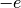
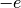
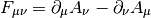
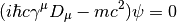
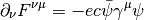
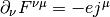
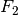
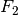
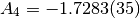

Quantum Electrodynamics (QED)¶
QED Lagrangian¶
The QED Lagrangian density is

where
and
is the gauge covariant derivative and ( is the elementary charge, which is
is the elementary charge, which is  in atomic units, i.e. the electron has a charge )
in atomic units, i.e. the electron has a charge )

is the electromagnetic field tensor. It’s astonishing, that this simple Lagrangian can account for all phenomena from macroscopic scales down to something like . So it’s not a surprise that Feynman, Schwinger and Tomonaga received the 1965 Nobel Prize in Physics for such a fantastic achievement.
Plugging this Lagrangian into the Euler-Lagrange equation of motion for a field, we get:


The first equation is the Dirac equation in the electromagnetic field and the
second equation is a set of Maxwell equations () with a source  , which is a
4-current comming from the Dirac equation.
, which is a
4-current comming from the Dirac equation.
Magnetic moment of an electron¶
In this section we derive the order- correction to the magnetic moment
of an electron.
correction to the magnetic moment
of an electron.
We start by computing the electron vertex function for the process :
where  corresponds to some heavy target. If is a fixed
classical potential, we get:
corresponds to some heavy target. If is a fixed
classical potential, we get:
Using general arguments (Lorentz invariance, parity-conservation, Ward identity) we can always write as:
where  and  ar unknown functions of called form factors. As we will see below, in the lowest order we get
and  ar unknown functions of called form factors. As we will see below, in the lowest order we get
 and
and  .
.
We can calculate the amplitude for elastic Coulomb scattering of a nonrelativistic electron from a region of nonzero electrostatic potential by setting , then:
If the electrostatic field is very slowly varying over a large (even
macroscopic) region, will be concentrated about , then we can take the limit  :
:
This corresponds to the Born approximation for scattering from a potential
Thus is the electric charge of the electron, in units of . Since
 already in the first order of perturbation theory, radiative
corrections to must vanish at
already in the first order of perturbation theory, radiative
corrections to must vanish at  .
.
Now we calculate the scattering from a static vector potential by setting , then:
In the limit this becomes:
where
is the Fourier transform of the magnetic field produced by .
This corresponds to the Born approximation for scattering from a potential
where
where
The coefficient  is called the Landé g-factor, and since the leading order
of perturbation theory gives (and we know that to all
orders), we get:
is called the Landé g-factor, and since the leading order
of perturbation theory gives (and we know that to all
orders), we get:
This is the standard prediction of the Dirac equation. The anomalous magnetic moment is then:
To calculate that, we need to evaluate the one-loop correction to the vertex function, so we start by deriving the appropriate Green function for the process :
![\ket{i} = a^{r\dag}_{\bf q} b^{t\dag}_{\bf p} \ket{\Omega}
\ket{f} = b^{s\dag}_{\bf p'} \ket{\Omega}
\braket{f|i} =\bra{\Omega} b^s_{\bf p'} a^{r\dag}_{\bf q}
b^{t\dag}_{\bf p} \ket{\Omega} =
=\bra{\Omega}T b^s_{\bf p'} a^{r\dag}_{\bf q}
b^{t\dag}_{\bf p} \ket{\Omega} =
=\bra{\Omega}T
\bar u^s({\bf p'}){1\over\tilde S(p')}\tilde \psi(p')
\epsilon_\mu^{r*}({\bf q}){q^2\over i} \tilde A^\mu(-q)
\tilde{\bar\psi}(-p){1\over\tilde S(-p)}u^t({\bf p})
\ket{\Omega} =
=\bar u^s({\bf p'}){1\over\tilde S(p')}
\epsilon_\mu^{r*}({\bf q}){q^2\over i}
\bra{\Omega}T
\tilde \psi(p')
\tilde A^\mu(-q)
\tilde{\bar\psi}(-p)
\ket{\Omega}{1\over\tilde S(-p)}u^t({\bf p}) =
=\bar u^s({\bf p'}){1\over\tilde S(p')}
\epsilon_\mu^{r*}({\bf q}){q^2\over i}
\tilde G(p, p', q)
{1\over\tilde S(-p)}u^t({\bf p}) =](../../_images/math/3995acfdd6e83e9177616c312163a609e3b34864.png)
where:
is the interacting Green function for the Lagrangian . In the first order:
![\tilde G(p, p', q) = \bra{\Omega}T \tilde\psi(p') \tilde A^\mu(-q)
\tilde{\bar\psi}(-p)
\ket{\Omega} =
= \int \d^4 x \bra{0}T \tilde\psi(p') \tilde A^\mu(-q)
\tilde{\bar\psi}(-p)
(-\lambda)\bar e(x) \gamma^\rho e(x) A_\rho(x)
\ket{0} =
= (-\lambda)\int \d^4 x \d\hat p'\d\hat q\d\hat p
e^{i\hat p'p' - \hat q q
-\hat pp}
\bra{0}T \psi(\hat p') A^\mu(\hat q)
{\bar\psi}(\hat p)
\bar e(x) \gamma^\rho e(x) A_\rho(x)
\ket{0} =
= (-\lambda)\int \d^4 x \d\hat p'\d\hat q\d\hat p
e^{i\hat p'p' - \hat q q
-\hat pp}
D^\mu_\rho(\hat q-x) S(\hat p' - x)\gamma^\rho S(\hat p-x)
=
= (-\lambda)(2\pi)^4\delta(p'-q-p)
\tilde D^\mu_\rho(q) \tilde S(p')\gamma^\rho \tilde S(p)](../../_images/math/dd85a3eecc251751de88042c5be9ab68aab4d246.png)
so the amplitude is:
and we got , so  and in the lowest
order. In the next order we get:
and in the lowest
order. In the next order we get:
Now we can write:
![\bar u(p')\Gamma^\mu(p', p) u(p) =
\bar u(p')(\gamma^\mu + \delta\Gamma^\mu) u(p)
\bar u(p')\delta\Gamma^\mu(p', p) u(p) =
\int {\d^4 k\over (2\pi)^4} \tilde D_{\nu\rho}(k-p)
\bar u(p')
(-ie\gamma^\nu)
\tilde S(k')
\gamma^\mu
\tilde S(k)
(-ie\gamma^\rho)
u(p) =
=
\int {\d^4 k\over (2\pi)^4} {-ig_{\nu\rho}\over (k-p)^2 +i\epsilon}
\bar u(p')
(-ie\gamma^\nu)
{i(\fslash k' + m)\over k'^2-m^2 +i\epsilon}
\gamma^\mu
{i(\fslash k + m)\over k^2-m^2 +i\epsilon}
(-ie\gamma^\rho)
u(p) =
= 2ie^2\int {\d^4 k\over (2\pi)^4}
{\bar u(p') \left(
\fslash k \gamma^mu \fslash k' + m^2\gamma^\mu - 2m(k+k')^\mu
\right) u(p) \over
((k-p)^2 + i\epsilon)(k'^2 - m^2 + i\epsilon)(k^2-m^2+i\epsilon)
}=
= \cdots =
= 2i e^2 \int {\d^4 l\over (2\pi)^4} \int_0^1 \d x \,\d y \,\d z\,
\delta(x+y+z-1)
{2\over D^3} \bar u(p') \left(
\gamma^\mu (-\half l^2+ (1-x)(1-y)q^2 + (1-4z+z^2)m^2)
+ {i\sigma^{\mu\nu}q_\nu\over 2m} (2m^2 z(1-z))
\right)u(p) =
= {\alpha\over 2\pi} \int_0^1 \d x \,\d y \,\d z\,
\delta(x+y+z-1)
\bar u(p') \left(
\gamma^\mu \left[\log {z \Lambda^2\over\Delta} + {1\over\Delta}
\left((1-x)(1-y)q^2 + (1-4z+z^2)m^2\right)\right]
+ {i\sigma^{\mu\nu}q_\nu\over 2m}\left[{1\over\Delta}2m^2 z(1-z)
\right] \right)u(p)](../../_images/math/f3c15228447cfc09bc972e14ef89bfeb32254a44.png)
where
So the expressions for the form factors are:
![F_1(q^2) = 1 + {\alpha\over 2\pi} \int_0^1 \d x \,\d y \,\d z\,
\delta(x+y+z-1)
\left[\log {z \Lambda^2\over\Delta} + {1\over\Delta}
\left((1-x)(1-y)q^2 + (1-4z+z^2)m^2\right)\right]
+O(\alpha^2)
F_2(q^2) = {\alpha\over 2\pi} \int_0^1 \d x \,\d y \,\d z\,
\delta(x+y+z-1)
\left[{1\over\Delta}2m^2 z(1-z) \right]
+O(\alpha^2) =
= {\alpha\over 2\pi} \int_0^1 \d x \,\d y \,\d z\,
\delta(x+y+z-1)
\left[2m^2 z(1-z)\over m^2(1-z)^2 - q^2 xy \right]
+O(\alpha^2)](../../_images/math/5349d519a28e9998dcbbcae8f0f3a12d66d67d9b.png)
contains both ultraviolet and infrared divergencies. To cure the infrared
divergence, we add a term to  . To cure the ultraviolet
divergence, we make the substitution:
. To cure the ultraviolet
divergence, we make the substitution:
where is the first order (in ) correction to (i.e.
):
so the corrected is:
![F_1(q^2) = 1 + {\alpha\over 2\pi} \int_0^1 \d x \,\d y \,\d z\,
\delta(x+y+z-1)
\left[\log {z \Lambda^2\over\Delta} + {1\over\Delta}
\left((1-x)(1-y)q^2 + (1-4z+z^2)m^2\right)+\right.
\left.-\log {z \Lambda^2\over\Delta (q^2=0)} - {1\over\Delta (q^2=0)}
(1-4z+z^2)m^2\right]
+O(\alpha^2) =
= 1 + {\alpha\over 2\pi} \int_0^1 \d x \,\d y \,\d z\,
\delta(x+y+z-1)
\left[\log {m^2 (1-z)^2\over m^2(1-z)^2 - q^2 x y} +
\left((1-x)(1-y)q^2 + (1-4z+z^2)m^2\over
m^2(1-z)^2 - q^2 x y +\mu^2z
\right)+\right.
\left.-{(1-4z+z^2)m^2\over m^2 (1-z)^2 + \mu^2 z}\right]
+O(\alpha^2)](../../_images/math/760874e0c83caecc4a2eb50c4d34debc52a9a836.png)
Neither the ultraviolet nor the infrared
divergence affects , so we just set  :
:
![F_2(0) = {\alpha\over 2\pi} \int_0^1 \d x \,\d y \,\d z\,
\delta(x+y+z-1)
\left[2m^2 z(1-z)\over m^2(1-z)^2 \right] +O(\alpha^2) =
={\alpha\over 2\pi} \int_0^1 \d x \,\d y \,\d z\,
\delta(x+y+z-1)
{2 z\over 1-z} +O(\alpha^2) =
={\alpha\over 2\pi} \int_0^1 \d y \int_0^1 \,\d z\,
\theta(1-(1-y-z))\theta((1-y-z)-0)
{2 z\over 1-z} +O(\alpha^2) =
={\alpha\over 2\pi} \int_0^1 \d y \int_0^1 \,\d z\,
\theta(y+z)\theta(1-y-z)
{2 z\over 1-z} +O(\alpha^2) =
={\alpha\over 2\pi} \int_0^1 \d y \int_0^1 \,\d z\,
\theta(1-y-z)
{2 z\over 1-z} +O(\alpha^2) =
={\alpha\over 2\pi} \int_0^1 \d z \int_0^{1-z} \,\d y
{2 z\over 1-z} +O(\alpha^2) =
={\alpha\over 2\pi} \int_0^1 \d z (1-z)
{2 z\over 1-z} +O(\alpha^2) =
={\alpha\over 2\pi} \int_0^1 \d z 2z + O(\alpha^2) =
= {\alpha\over 2\pi} + O(\alpha^2)](../../_images/math/90061963f2160719e762e97e8fd131bea91fe951.png)
Thus we get the correction to the -factor of the electron:

Code:
>>> from math import pi
>>> alpha = 1/137.035999
>>> a_e = alpha / (2*pi)
>>> a_e
0.0011614097335977778
Experiments give .
Higher order corrections from QED can also be calculated:
we already know that . See for example hep-ph/9410248 for the expression for :
Code:
>>> from sympy import zeta, S, log
>>> A_2 = S(197)/144 + zeta(2)/2 + 3*zeta(3)/4 - 3*zeta(2) * log(2)
>>> A_2.n()
-0.328478965579194
See hep-ph/9602417, where the author obtains the following expression for the coefficient :
Code:
>>> from sympy import pi, zeta, S, log, sum, var, oo
>>> var("n")
n
>>> a4 = sum(1/(2**n * n**4), (n, 1, oo))
>>> A_3 = 83*pi**2*zeta(3)/72 - 215*zeta(5)/24 + 100*(a4 + log(2)**4/24 - \
... pi**2*log(2)**2/24)/3 - \
... 239*pi**4/2160 + 139*zeta(3)/18 - 298 * pi**2 * log(2)/9 + \
... 17101 * pi**2 / 810 + S(28259)/5184
>>> A_3.n()
1.18124145658720
Numerical approximation for can be found in hep-ph/0507249:

So the total value of is:

Let’s state the experimental value again for comparison (see above):
At this level of accuracy, the uncertainty of the exact value of as
well as other corrections coming from the Standar Model come into play, so one
should not take the numbers above too seriously, but one can roughly say, that
the agreement between the QED prediction and experiment is about 8 significant
figures.
Code:
>>> from sympy import pi, zeta, S, log, sum, var, oo
>>> var("n")
n
>>> a4 = sum(1/(2**n * n**4), (n, 1, oo))
>>> A_1 = S(1)/2
>>> A_2 = S(197)/144 + zeta(2)/2 + 3*zeta(3)/4 - 3*zeta(2) * log(2)
>>> A_3 = 83*pi**2*zeta(3)/72 - 215*zeta(5)/24 + 100*(a4 + log(2)**4/24 - \
... pi**2*log(2)**2/24)/3 - \
... 239*pi**4/2160 + 139*zeta(3)/18 - 298 * pi**2 * log(2)/9 + \
... 17101 * pi**2 / 810 + S(28259)/5184
>>> alpha = 1/137.035999
>>> a_e = A_1 * (alpha/pi) + A_2 * (alpha/pi)**2 + A_3 * (alpha/pi)**3
>>> a_e.n()
0.00115965223273643
>>> A_4 = -1.7283
>>> (a_e + A_4 * (alpha/pi)**4).n()
0.00115965218242334